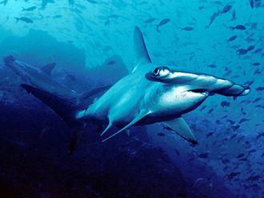

| 路氏雙髻鯊 | |  |

生物介紹：
路氏雙髻鯊（學名：Sphyrna lewini），又稱作紅肉丫髻鮫，俗名犛頭沙、雙髻鯊、雙過仔。為軟骨魚綱真鯊目雙髻鯊科的其中一種。本魚體粗壯且延長，最大特徵是頭的額骨區向左右兩側突出，眼位於頭兩側突出部。體背部呈灰色，腹面稍淡。背鰭2個，胸鰭棘尾鰭上下葉尖端具黑斑；背鰭上部具黑緣，體長可達430公分。本魚棲息於沿岸至外洋中表層魚類，幼時常成群活動，成魚則獨游或小群巡遊。肉食性，以小型魚類為食。胎生，一次可產下15至31尾幼鯊，有攻擊人的紀錄。
分布：
肯氏龜偏好溫暖水域，當水溫低於10℃，海龜的心率就會減慢，活動能力喪失。但是也居住在更北部的新澤西州。從大西洋到墨西哥灣都有分布。產卵點則多數位於墨西哥塔毛利帕斯州，但是有時也會前往美國德克薩斯州的帕德雷島。本魚廣泛分布於全球各大洋熱帶至溫帶海域。
原因：
路氏雙髻鯊為食用魚，另可做為遊釣魚。因過度捕撈數量減少。1996年IUCN評估為近危，近年因數量下降而評估為瀕危。